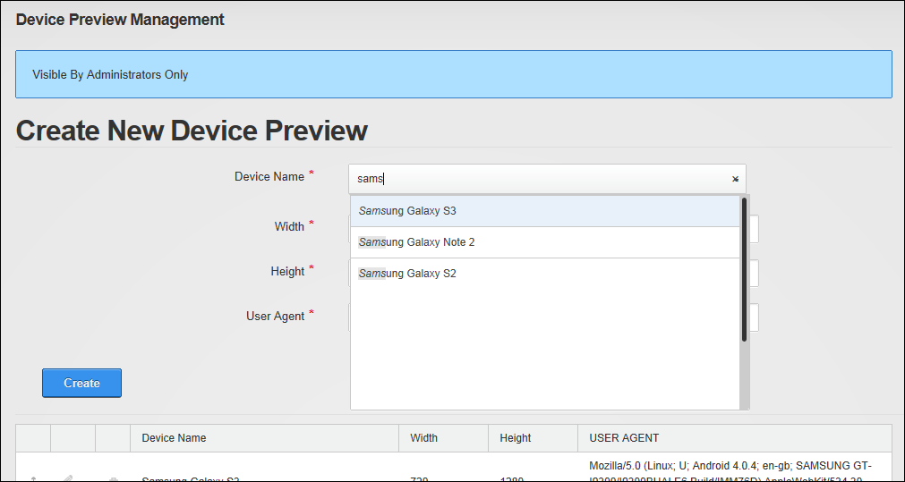

Adding an Existing Preview Profile
Although you are able to enter your own data to create a brand new preview profile, you will find that most already exist in this module. The following profiles are included: B&N Nook Color, Blackberry Bold 9000, Blackberry Curve 8330, Blackberry Playbook, Blackberry Storm 2 9550, Blackberry Bold 9700, Blackberry Torch 9800, Google G1, Google Nexus S, HP TouchPad, HTC 7 Surround, HTC Aria, HTC HD mini, HTC HD2, HTC Incredible, HTC Touch Pro, HTC Wildfire, iPad, iPad 2, iPhone, Phone 3, iPhone 3GS, iPhone 4, iPod touch, Kindle 3, Motorola DroidX, Nokia C7, Nokia N8, Nokia N97, Palm Pixi, Palm Pre, Palm Pre 2m, and Samsung Galaxy Tab 0.1.
How to add a new preview profile using the Device Preview Management module:
- Navigate to Admin > Advanced Settings >
 Device Preview Management.
Device Preview Management.
- Go to the Create New Device Preview section.
- Click inside the Device Name text box to view the full list of devices with existing profiles and begin typing the name of the required device to filter the list and ensure the device isn't already listed. If you device isn't listed, enter the device name into the text box.

- Once you have made your selection from the pre-existing options the Width, Height and User Agent fields are all populated with the correct information. Alternatively, if you are creating a new preview profile from scratch, enter your information into each of these fields.

- Click the Create button. The newly created profile is now added to the list below. Note: You can click on the Drag and Drop button and drag this item to a new position in the list if desired.